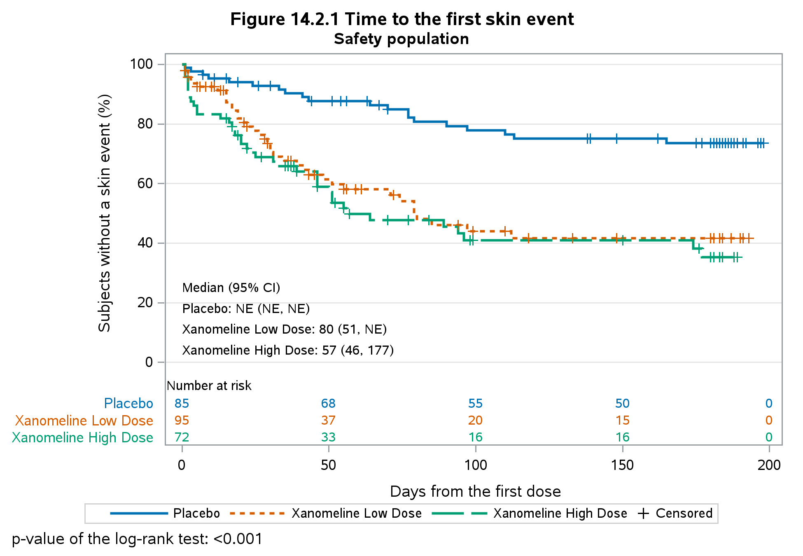

Make a Kaplan-Meier figure with the number at risk¶
This guide shows how to draw the Kaplan-Meier curves of a time to an event by treatment, with the number at risk under the axis, the median of each group, and the log-rank p-value in a footnote. You get a PNG file and an RTF file.
Before you start¶
- Submit
examples/setup.sas, or start your own program as Use the macros in your own program shows. - Have one record per subject with the time (
aval) and the censoring variable (cnsr, 1 = censored). If your data have no such parameter yet, step 1 derives it. - Have the population, one row per subject (
adsl), for the order of the curves.
Steps¶
1. Derive the time to the event¶
Skip this step if your ADTTE has the parameter. The guide derives the time to the first treatment-emergent skin
event, from the first dose. A subject without an event is censored at the date of the last dose (censor_date =
trtedt). The call has no end=, so an event after the last dose still counts; give end = trtedt to count only
the events up to the end of treatment:
%tte(
subjects = adsl
, events = adae
, event = trtemfl = 'Y' AND aebodsys = 'SKIN AND SUBCUTANEOUS TISSUE DISORDERS'
, date = astdt
, start = trtsdt
, censor_date = trtedt
, seq = aeseq
, censor_desc = "End of treatment"
, censor_source = "ADSL"
, event_desc = aedecod
, source = "ADAE"
, paramcd = "TTSKIN"
, out = ttskin
)
ttskin: the first 4 of 252 rows
USUBJID TRT01A PARAMCD ADT CNSR AVAL EVNTDESC
01-701-1015 Placebo TTSKIN 02JUL2014 1 182 End of treatment
01-701-1023 Placebo TTSKIN 07AUG2012 0 3 ERYTHEMA
01-701-1028 Xanomeline High Dose TTSKIN 14JAN2014 1 180 End of treatment
01-701-1033 Xanomeline Low Dose TTSKIN 31MAR2014 1 14 End of treatment
A subject with no event and no date of the last dose (trtedt missing) has neither an event nor a censoring, so
%tte writes no record for it. Find such subjects before you draw. The example data have two:
PROC SORT DATA=ttskin OUT=tte_ids(KEEP=usubjid) NODUPKEY; BY usubjid; RUN;
PROC SORT DATA=adsl OUT=adsl_ids(KEEP=usubjid trt01a trtsdt trtedt); BY usubjid; RUN;
DATA no_record;
MERGE adsl_ids tte_ids(IN=in_tte);
BY usubjid;
IF NOT in_tte;
RUN;
no_record: 2 rows
USUBJID TRT01A TRTSDT TRTEDT
01-705-1018 Placebo 05JUL13
01-705-1382 Xanomeline Low Dose 13MAY13
These two subjects are in the N of their columns, which comes from adsl, but not in the curves: at day 0 the
Placebo curve has 85 subjects at risk of N=86, and the Xanomeline Low Dose curve 95 of N=96.
2. Summarize the curves and make the columns¶
Call %km for the median of each group and its confidence interval:
t_km where stat NE 'n' AND stat NE 'events': 9 rows
TRT01A STAT VALUE TEXT
Placebo median NE
Placebo lcl NE
Placebo ucl NE
Xanomeline High Dose median 57 57.0
Xanomeline High Dose lcl 46 46.0
Xanomeline High Dose ucl 177 177.0
Xanomeline Low Dose median 80 80.0
Xanomeline Low Dose lcl 51 51.0
Xanomeline Low Dose ucl NE
NE is a median or a limit that the curve does not reach: the Placebo curve stays above 50%. Then call %columns on
the result of %km: the columns give the order of the curves and their colors.
3. Put the log-rank p-value into a footnote¶
Call %logrank, then keep the printed text of its p-value in a macro variable:
%logrank(data=ttskin, var=aval, by=trt01a, out=t_logrank)
DATA _NULL_;
SET t_logrank;
CALL SYMPUTX('pval', text);
RUN;
4. Draw the figure¶
Write the titles and the footnotes, then call %kmplot. median = yes writes the median of each group and its
confidence interval in the plot. xlabel= and ylabel= name the axes:
TITLE1 "Figure 14.2.1 Time to the first skin event";
TITLE2 "Safety population";
FOOTNOTE1 J=L "p-value of the log-rank test: &pval.";
%kmplot(
data = ttskin
, columns = t_km_cols
, time = aval
, by = trt01a
, median = yes
, xlabel = "Days from the first dose"
, ylabel = "Subjects without a skin event (%)"
, file = &spl_out./figures/f_ttskin
, out = f_ttskin
)

The number at risk under the axis counts the subjects whose time is the time of the tick or later. To choose the
ticks, give their times in times=, such as times = 0 30 60 90 120 150 180.
5. Check the numbers that the figure draws¶
out= keeps every number of the figure. Print the number at risk of each group:
f_ttskin where kind = 'atrisk': 15 rows
TRT01A X N
Placebo 0 85
Placebo 50 68
Placebo 100 55
Placebo 150 50
Placebo 200 0
Xanomeline High Dose 0 72
Xanomeline High Dose 50 33
Xanomeline High Dose 100 16
Xanomeline High Dose 150 16
Xanomeline High Dose 200 0
Xanomeline Low Dose 0 95
Xanomeline Low Dose 50 37
Xanomeline Low Dose 100 20
Xanomeline Low Dose 150 15
Xanomeline Low Dose 200 0